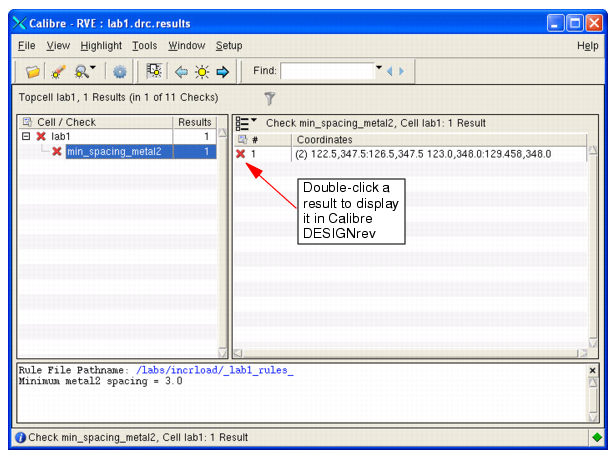
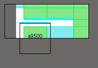

You can invoke
Calibre RVE from within Calibre DESIGNrev and drive incremental
loading by loading results from an RDB file. This is useful when
you need to review verification results on large layouts.
Note: User-defined clips
are also useful for incremental loading, as this is a method for
you to manually load an area, without using Calibre RVE to drive
the process. Refer to “Creating and Working with User-Defined Clips” for more information.
Procedure
- Open a layout incrementally
in Calibre DESIGNrev. For example:
calibredrv -incr -m lab1.gds
- Choose .
This displays the Calibre RVE
dialog box.
- In the Database field, type
or browse to and select the results database name.
- In the Database Type field,
select the DRC/ERC option.
- Click Open.
This invokes Calibre RVE and
opens the results database. In the example shown in Figure 1, the database contains one error result
for the “lab1” cell.
Figure 1. Calibre RVE Results
- In Calibre RVE, double-click
the result that you want to display in Calibre DESIGNrev.
This displays the relevant
layers in Calibre DESIGNrev. The gray color represents areas not
loaded by the layout viewer. White areas (or black depending on
your Calibre DESIGNrev background color) represent loaded areas.
Figure 2. Calibre DESIGNrev
Loaded Area
- If you want to change the
halo for this clip, choose to
display the Misc tab in the Preferences dialog
box.
- In the Load / Clips section,
verify the “Shapes on RVE layers automatically create clips” is
enabled and specify a Halo value (in um).
- Click OK to
close the Preferences dialog box.
If you changed the halo, the
Calibre DESIGNrev layout is updated accordingly.
Note: For instructions
on loading clips from an RDB file, refer to the $L create clip batch command in the Calibre DESIGNrev Reference Manual.